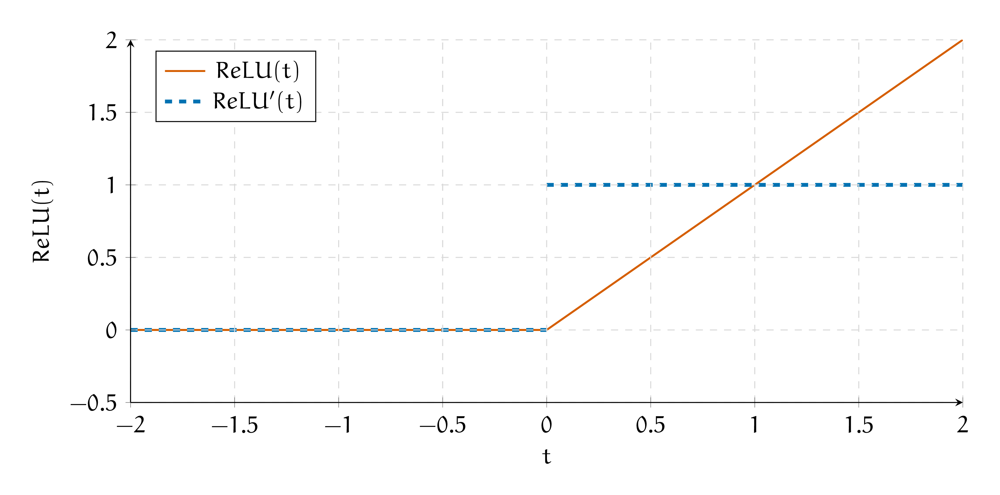
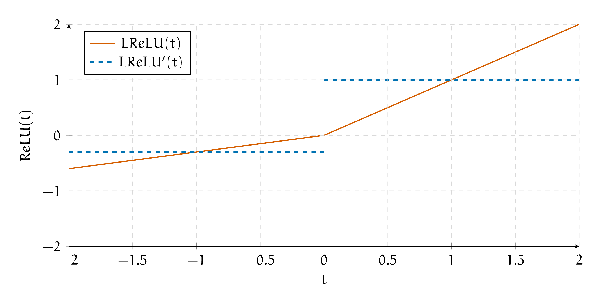
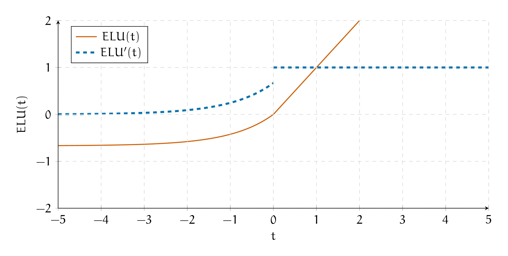
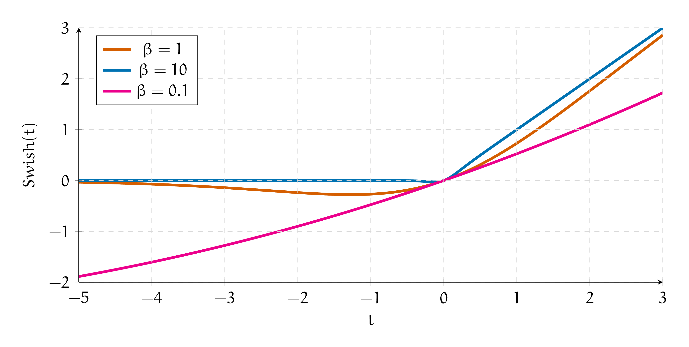

5. ReLU и её друзья
5. ReLU и её друзья#
Функция \(f(t) = ReLU(t) = \max(t, 0)\) называется ReLU.
а) Как выглядит производная ReLU? Что происходит с ReLU при обратном распространении ошибки? Возможен ли в случае ReLU паралич нейросети? Если да, как его избежать?
Решение
Возьмём производную
Нарисуем функцию активации и её производную на графике.
{kind=link}
Получается, что при обратном распространении ошибки мы будем умножать градиент либо на \(1\) либо на \(0.\) Если из слоя вылезут сплошные нули, тогда градиенты умрут и сетка не будет обучаться.
Линейный слой с ReLU в качестве функции активации выглядит как
Если \(b\) инициализировано отрицательным числом, нейрон сразу умирает. Чтобы этого не произошло, нужно инициализировать константу \(b\) перед обучением каким-то большим положительным числом. На практике оказывается, что ReLU работает довольно хорошо.
б) Как у ReLU дела с центированием относительно нуля?
Решение
В ReLU нет экспоненты, поэтому она быстро вычисляется. Сходимость сеток ускоряется.
Проблема ReLU в том, что сетка может умереть, если активация занулится на всех нейронах. Также функция активации не центрирована относительно нуля, это может замедлять сходимость обучения для глубоких сеток.
Хочется обобщить ReLU так, чтобы сохранить вычислительную эффективность, но при этом вылечить эти две проблемы.
Функция Leaky ReLU (протекающий ReLU) называется
в) Чем такая функция активации лучше, чем ReLU?
Решение
Возьмём производную
Нарисуем функцию активации и её производную на графике.
{kind=link}
Такая функция очень похожа на ReLU и обладает всеми её достоинствами. Главное не ставить \(\alpha = 1,\) иначе мы получим линейную активацию.
Leaky ReLU страхует от зануления всех выходов. Из минусов сохраняется то, что функция не центрирована относительно нуля.
Функцией ELU (Exponential Linear Unit) называется
г) Как выглядит шаг обратного распространения ошибки через ELU? Чем такая функция активации лучше, чем ReLU?
Решение
Возьмём производную
Вторую строку можно переписать как \(ELU(t) + \alpha\) для экономии вычислений. Нарисуем функцию активации и её производную на графике.
{kind=link}
На отрицательных значениях аргумента функция активации становится экспоненциальной. Идея функции активации заключается в том, чтобы сочетать в одной функции наличие отрицательных значений и их быстрое насыщение при дальнейшем уменьшении аргумента. Благодаря этому активация на отрицательных значениях не уходит далеко от нуля и сохраняется разреженность.
Также такая функция будет примерно центрирована относительно нуля (в терминах математического ожидания). На практек оказывается, что ELU ускоряет сходимость глубоких нейронных сетей.1
Функцией SELU (Scaled Exponential Linear Units activation) называется
В качестве констант авторы статьи про эту функцию предлагают использовать \(\alpha = 1.67733, \lambda = 1.0507\). Они захардкожены.
д) Когда мы обучаем линейную модель градиентным спуском, мы нормализуем перед этим данные. Зачем мы это делаем? Как думаете, почему эта функция называется нормализованной (scaled)?
Решение
В машинном обучении используются разные способы нормирования данных. Один из них заключается в том, что мы вычитаем из наших наблюдений среднее и делим их на стандартное отклонение. В пространстве нормализованных признаков градиентный спуск отрабатывает эффективнее.
Было бы классно, если бы после каждого слоя, внутри нашей сетки, данные оказывались нормализованы. Тогда бы градиентный спуск работал эффективнее. В будущих листочках мы будем говорить про технику, которая следит за нормировкой выходов каждого слоя. Она называется нормализацией по батчам.
Функция активации SELU обладает свойством самонормализации. Выходы всех слоёв нейронной сети будут распределены со средним ноль и дисперсией равной единице. Это позволяет не использовать в нейросетках нормализацию по батчам. Более того, авторы в статье доказывают, что SELU не способствует взрыву или затуханию градиентов. Правда выводы и доказательства занимают под сотню страниц.2
Если вы используете SELU, важно не забыть поставить в качестве инициализатора весов инициализацию Лякуна. Если вы собираетесь использовать Dropout, лучше взять AlphaDropout. Это разновидность dropout, которая поддерживает нулевое среднее и единичную дисперсию.
В таком случае самонормализация будет работать корректно. Подробнее про инициализацию и Dropout мы поговорим в одном из следующих листочков.
е) В 2017 году учёные из Google Google Brain хитрым автоматическим поиском на основе RNN нашли функцию активации Swish.3
Параметр \(\beta\) здесь обучается. После того, как эту функцию нашли, учёные почесали репу и попробовали проинтерпретировать, почему она вообще работает.
Мы тут тоже не лыком шиты и своего рода учёные. Повторите путь авторов статьи и проинтерпретируйте, что делает эта функция активации.
Что происходит с функцией активации при \(\beta \to 0\) и \(\beta \to \infty\)? За что отвечает параметр \(\beta\)?
Решение
Swish – гладкий вариант ReLU с гейтом. Гейтами в нейросетях называют «ворота», которые во время обучения настраиваются либо пропускать либо не пропускать информацию по какому-то маршруту.
Давайте попробуем сделать перебор параметра \(\beta\) и нарисуем несколько вариантов функции.
{kind=link}
При \(\beta \to 0\) мы получаем линейную функцию \(\frac{t}{2}.\) При \(\beta \to \infty\) сигмоида превращается в ступеньку и принимает значение либо \(0\) либо \(1\). Из-за домножения на \(t\) получается ReLU.
Параметр \(\beta\) обучается и выбирает позицию между этих двух крайностей и решает, нужна ли слою активация или нет.
Конечно же, на этом учёные не остановились и продолжили придумывать более интересные функции активации. В 2019 году они опять начали заниматься перебором и получили соперника Swish под названием Mish.4
В 2021 году учёные попробовали обобщить все эти функции, а потом получить из этого обобщения что-нибудь интересное. Так родилось целое семейство саморегулирующихся функций активации, ACON (Activate or Not), а для исследования открылась целая область.5
Это, конечно всё офигенно, а что делать на практике? Начните с ReLU, аккуратно инициализируйте веса и настраивайте скорость обучения. Дальше имеет смысл попробовать ELU/SELU. Если есть время на эксперименты, можно попробовать что-то более экстравагантное. Довольно приятно заменить одну функцию активации на другую и выиграть в качестве целый процент. Ни в коем случае не используйте тангенс и сигмоиду.
Также почитайте небольшой обзор функций активации.6